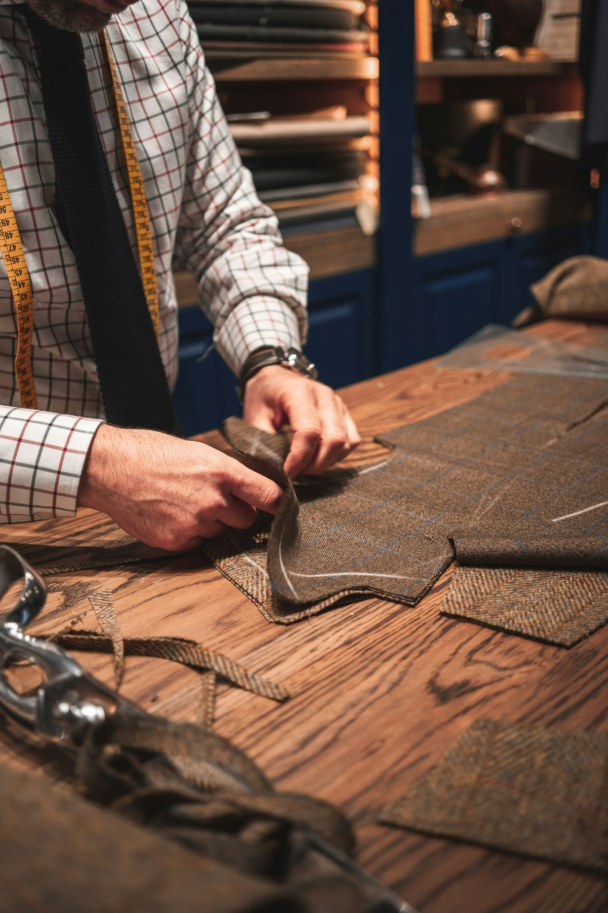
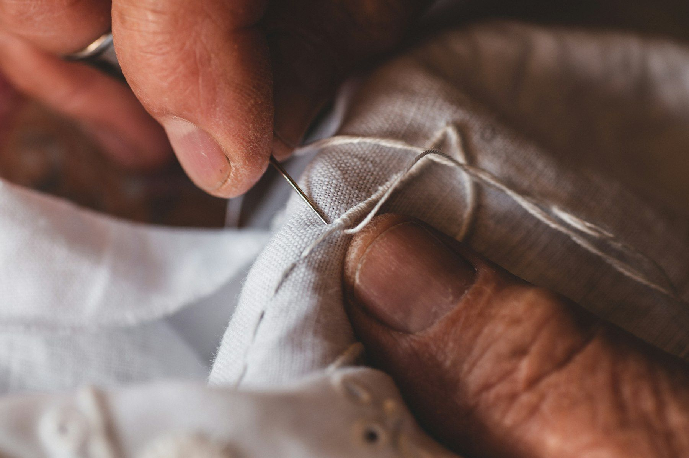
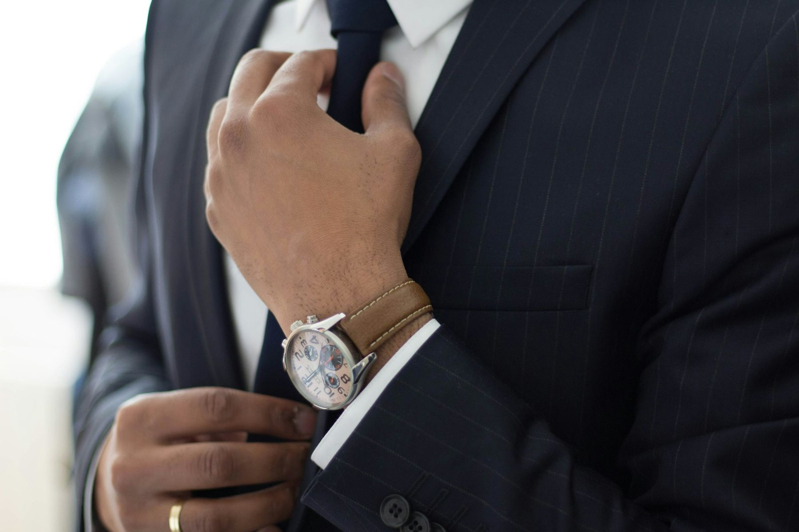
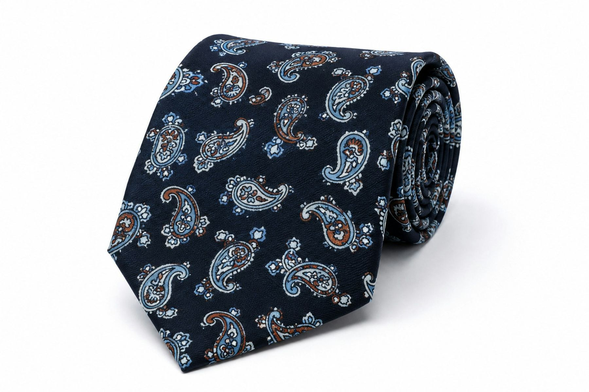
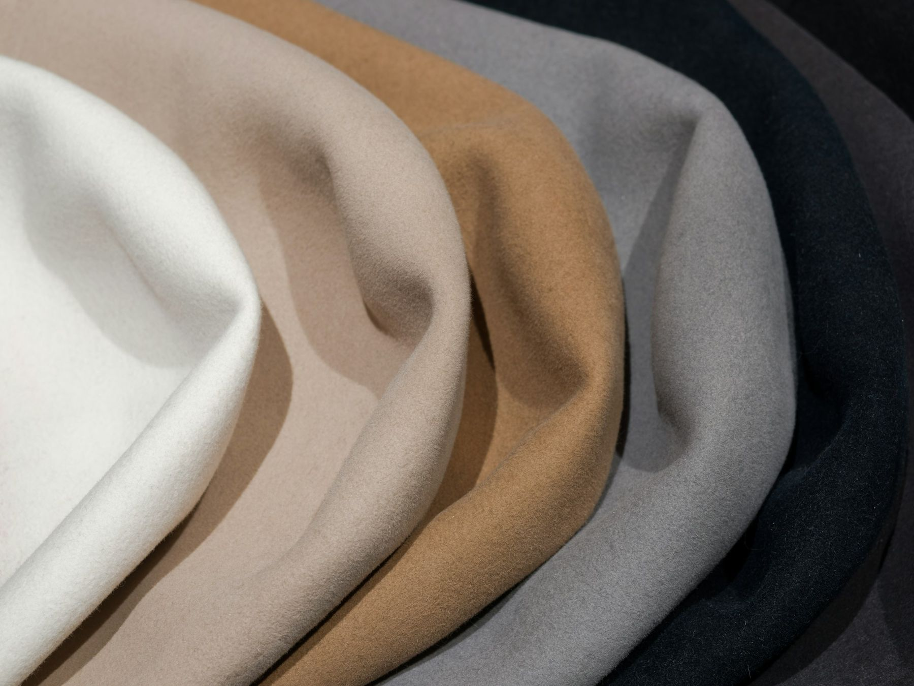
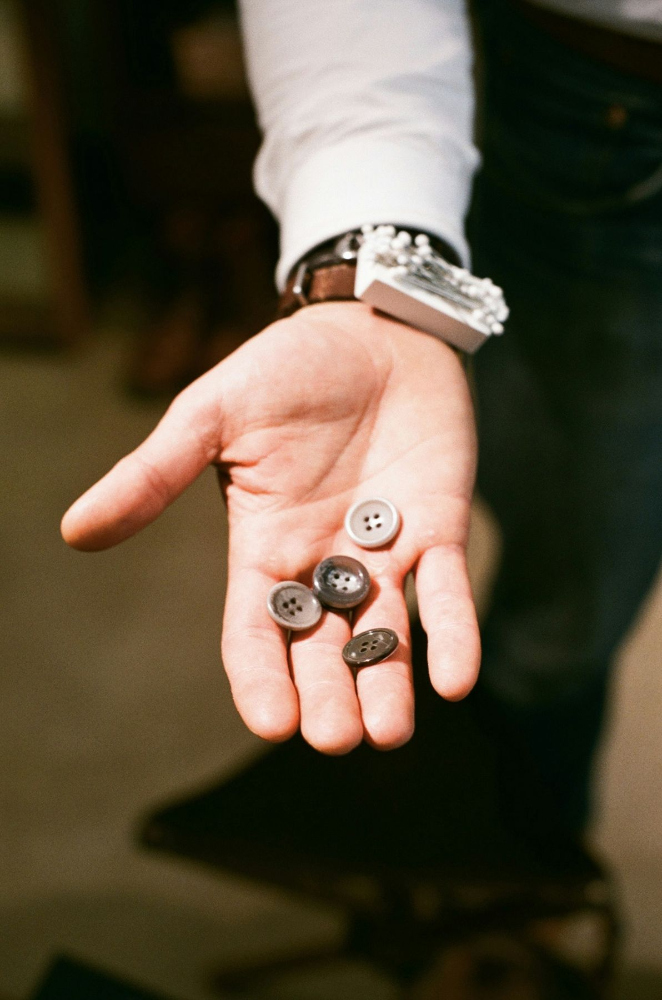
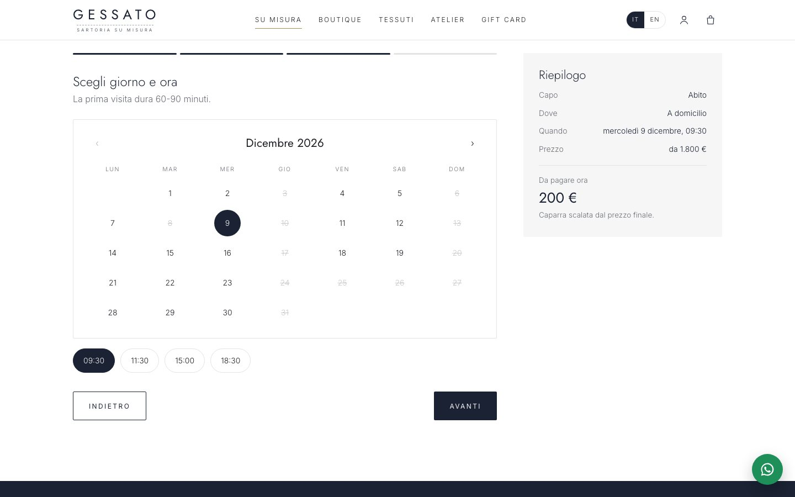
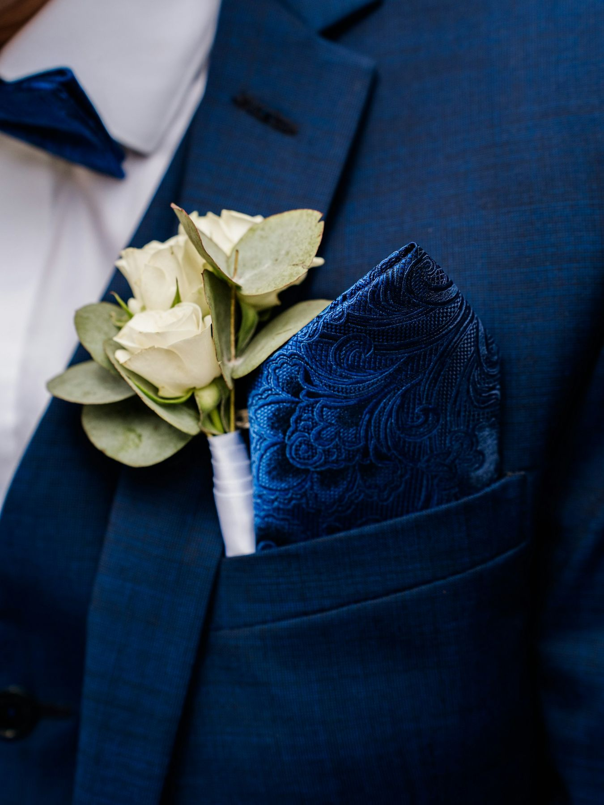
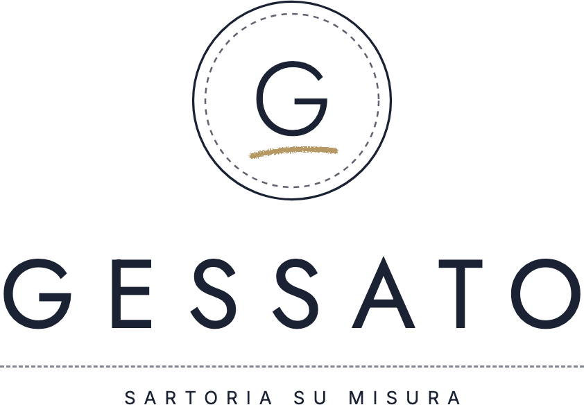
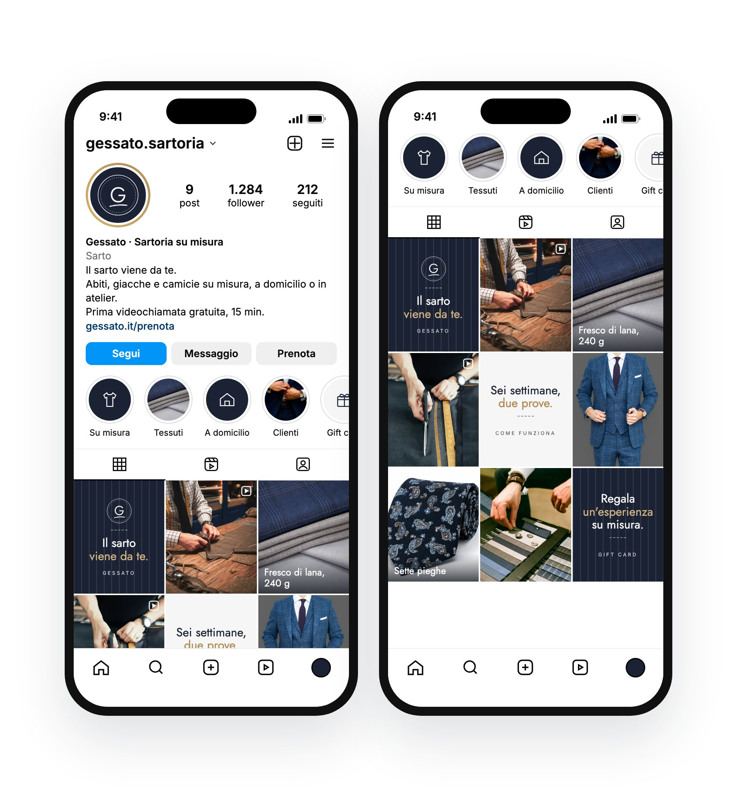

La demo
Si può già provare.
Boutique dei modelli, prenotazione, gift card, area cliente, due lingue. Nome, prezzi e foto di esempio.
Apri la demo

Come vendere online un abito che non si compra con un clic.
Looking Up Studio · Novembre 2026

Servono le misure, la fiducia, il tempo. Oggi si ordina, poi una persona va a casa del cliente.

Online si sceglie un modello e si prenota la visita del sarto, con una caparra scalata dal prezzo. Le misure, le prende lui.

Come la cravatta di Marinella. Per Gessato, la boutique mostra pochi modelli simbolo: si sceglie online, il sarto lo realizza sulle tue misure.


Il sito porta il cliente.
Il sarto fa il resto.
Su misura e i modelli della boutique, dalla prima schermata. Italiano e inglese.
Due strade: partire da una conversazione, o da un modello.
Capo, luogo, giorno, caparra. Il cuore del sito.
Il percorso, i tempi, i prezzi a partire da.
I modelli: abiti, giacche, cappotti, cerimonia. Tutti su misura.
Si regala la visita del sarto.
Misure salvate, prove, riordino delle camicie.
Le lane, i dettagli, i capi indossati.
Le mani, il laboratorio, la storia.
Tempi, prove, resi, zone servite.
Un messaggio, su ogni pagina.

Instagram, passaparola, una gift card.
Capo, luogo, giorno. Caparra o videochiamata.
Misure e tessuti, a casa sua.
Due, con avvisi via email e WhatsApp.
A mano. Le misure restano salvate.
Le camicie successive, online.
Boutique dei modelli, prenotazione, gift card, area cliente, due lingue. Nome, prezzi e foto di esempio.
Apri la demo



Si regala la visita del sarto e un capo fatto per lui. Chi la riceve diventa cliente.
Dopo la prima visita, la prossima camicia si ordina online. Senza nuove visite.
Il gesso del sarto e il tessuto rigato più classico. Un nome di esempio, per mostrare il metodo.


Mani, tessuti, dettagli. Poche parole. In bio il servizio e il link per prenotare; gli ultimi post anche sul sito.
01Perché adesso un sito e-commerce? Cosa deve cambiare tra un anno (più clienti, più fatturato, nuove città, estero)?
02Chi è il vostro cliente ideale oggi? Età, professione, dove vive, per quali occasioni compra (lavoro, cerimonia, sposo)?
03Cosa vi rende diversi dalle altre sartorie? Cosa dicono di voi i clienti contenti?
04In quali zone andate a casa del cliente oggi? E dove vorreste arrivare (altre città, Londra, estero)?
05Quante visite servono per un capo (misure, prove, consegna) e in quanto tempo è pronto?
06Il domicilio ha un costo o è incluso? Accettereste una caparra online al momento della prenotazione?
07Quali capi fate (abito, giacca, camicia, cappotto, cerimonia) e da che prezzo partono?
08Avete prodotti che si possono vendere senza misure (cravatte, pochette, camicie in taglia, accessori)?
09Vi piace l'idea di una gift card «esperienza su misura» da regalare?
10Conservate le misure dei clienti? Si possono riusare per riordini online (es. camicie)?
11Avete già nome, logo, colori? Siete disposti a rivederli o devono restare?
12Tre parole che descrivono come volete essere percepiti.
13Un brand (anche non di moda) che ammirate e uno da cui volete distinguervi.
14Chi seguirà ordini, appuntamenti e messaggi dopo il lancio?
15Avete foto e video dei capi e del lavoro in atelier, o vanno fatti?
16Instagram: avete già un profilo? Chi lo gestisce?
17Entro quando volete essere online e che budget avete in mente?
Il sarto viene da te.
Looking Up Studio · lookingupstudio.com